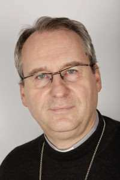
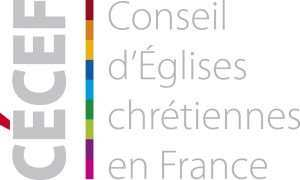

Publié le 18 novembre 2016 sur le site de la CEF

Madame la Directrice Générale,
La Conférence des évêques de France a pris connaissance de la résolution de l’Unesco le 13 octobre dernier, concernant la ville de Jérusalem. Cette résolution pose un certain nombre de questions. En effet, la foi chrétienne s’enracine dans une histoire, dans un peuple et dans des lieux. En ce sens, l’Église catholique a toujours gardé comme un trésor précieux l’ensemble du texte biblique et elle manifeste son attachement à la Terre Sainte, particulièrement la ville de Jérusalem. Or la résolution du 13 octobre dernier semble ignorer le lien du peuple juif et, en conséquence, de la tradition chrétienne, avec Jérusalem. La reconnaissance explicite de chaque communauté de croyants, le respect de cette histoire, est non seulement une question de justice mais aussi une condition de paix. Nous souhaitons vivement que l’Unesco soit attentive à ce point.
Nous vous prions de recevoir, Madame la Directrice Générale, l’assurance de nos salutations respectueuses. Mgr Vincent Jordy, évêque de Saint-Claude, Président du Conseil pour l’Unité des Chrétiens et les Relations avec le judaïsme
--------------------------------
Publié le 04 novembre 2016 sur le site du CEF

Dans un courrier daté du 20 mai 2016, le Conseil d’Églises Chrétiennes en France (CECEF) a fait part à Irina Bokova, Directrice générale de l’Unesco, de ses interrogations sur la mention des noms des lieux, suite aux résolutions adoptées lors de la 199e session de conseil exécutif, sur le point « Palestine occupée ».
Madame la Directrice Générale,
Le Conseil d’Églises Chrétiennes en France (CECEF), à l’occasion de son assemblée du mercredi 11 mai 2016 à Paris, a pris connaissance des résolutions de la 199e session du conseil exécutif de l’Unesco le 11 avril 2016 sur le point 19 EX/PX/DR.19.1 Rev. « Palestine occupée ». Ces résolutions ont été votées par la France. Le CECEF souhaite vous faire part des interrogations suscitées par la lecture des résolutions adoptées. Il s’interroge sur le contenu et le ton de celles-ci mais aussi le déséquilibre flagrant dans la mention des noms des lieux.
Conscients de la vocation fondatrice de l’UNESCO « de contribuer au maintien de la paix et de la sécurité en resserrant, par l’éducation, la science et la culture, la collaboration entre nations » (article 1), les chrétiens sont soucieux de promouvoir la réconciliation et le dialogue. A cet effet, ils rappellent la nécessité de prendre en compte l’épaisseur historique des sites religieux sacrés de Jérusalem. Le CECEF soutient la vocation de l’UNESCO, affirmée notamment dans le préambule de son article constitutif. Ses co-présidents demandent la prise en compte de ce courrier dans la rédaction de votre rapport d’étape (c.f. §40 du document nommé ci-dessus) et se tiennent à votre disposition pour un rendez-vous.
En vous souhaitant une bonne réception, nous vous assurons, Madame la Directrice, ainsi que tous les personnels de l’UNESCO, de notre prière dans l’accomplissement de votre mission.
Métropolite Emmanuel, Président en exercice Pasteur François Clavairoly, Co président Mgr Georges Pontier, Co président